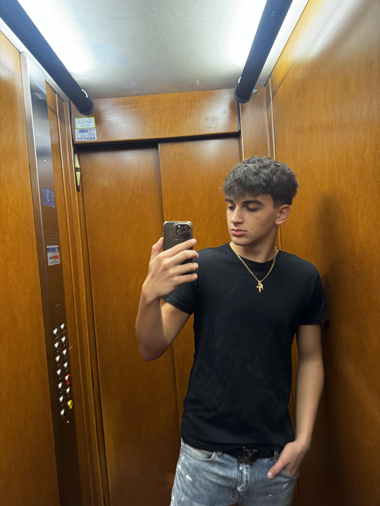

gira la foto
mi presento:

gabriele ballanza
- Gabriele Ballanza
- 14 Anni
- 2CIT al Maxwell in informatica e telecomunicazioni
- il 21/10/2009
- a Nichelino (TO)
Mi presento sono Gabriele Ballanza ho 14 anni e studio al maxwell nell' indirizzo informatica e telecomunicazioni nella 2CIT,
sono nato a Moncalieri il 21 otttobre del 2009 e sono un grande appassionato di moto infatti ne ho anche una,
ovvero un vent 50 del 2024 , inoltre pratico anche sport, il Basket ma ho praticato anche altri sport come Nuoto e Karatè,
ho smesso il mio percorso di Karatè perchè praticando sia Basket che Karatè era diventato troppo impegnativo allora ho deciso di smettere ma comunque
lo pratico sin da quando ho 7 anni e ho concluso il mio percorso essendo cintura nera 1° DAN che comunque è già un buon livello.
Di solito nel mio tempo libero esco con gli amici e vado anche in moto.
Da grande vorrei diventare un iformatico perchè secondo me è un lavoro molto interessante e sarebbe anche bello da fare
inoltre spero anche di riuscire a realizzare i miei sogni e i miei obbioettivi come per esempio
quello di diventare un cestista professionista in futuro